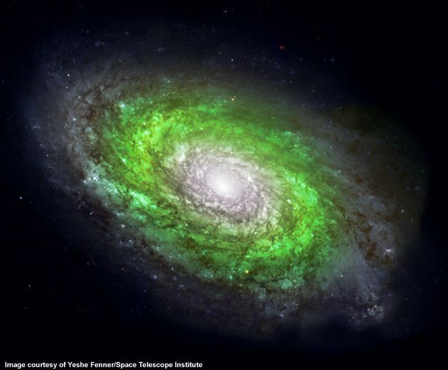

Only 10% of the stars in the Milky Way reside in the green shading
--
the believed current location of the GHZ.
Within this zone the chemical and environmental conditions would be
most suitable for the development of
complex Earth-like life.